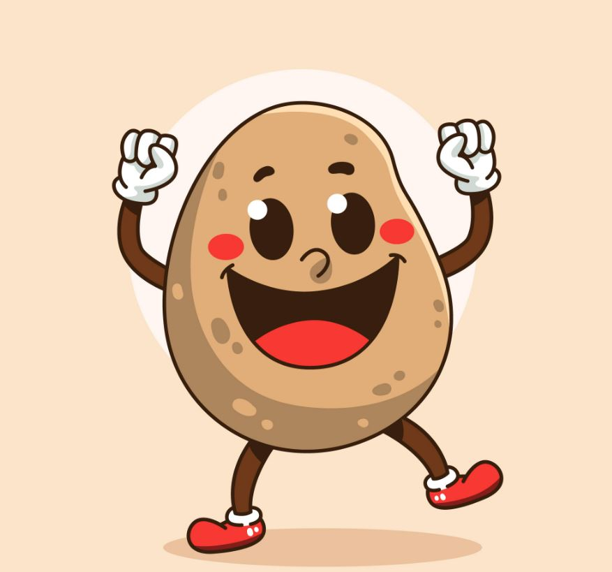
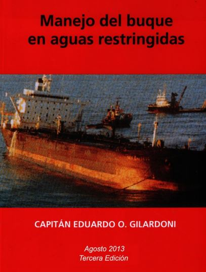

LA PAPA DE MANIOBRAS PARA PITANCA

1 Una alta relación Eslora/Manga hace que:
Se tenga una mala estabilidad direccional
Se tenga una buena capacidad de maniobra
Se tenga una buena estabilidad direccional
Se tenga una mala capacidad de maniobra
1.1. Si un primer buque tiene una relación eslora-manga más chica que un segundo, podemos esperar que:
El 1er tenga mejor capacidad de maniobrar
El 2do tenga mayor estabilidad direccional
El 2do tenga mejor respuesta al maniobrar
El 1er tenga mayor estabilidad direccional
1.2. Si un primer buque tiene una relación eslora-manga más grande que un segundo, podemos esperar que:
El 1er tenga mejor capacidad de maniobrar
El 2do tenga mayor estabilidad direccional
El 2do tenga mejor respuesta al maniobrar
El 1er tenga mayor estabilidad direccional
2.1. Qué pasa con el Punto Pivot al navegar aproado?
Se corre más a proa de la posición que tiene al navegar con calados parejos
Se traslada cerca de la sección media del buque
Queda más a proa de la sección media del buque
No se altera la posición del Punto Pivot
2.2. Qué pasa con el Punto Pivot al navegar apopado?
Se corre más a proa de la posición que tiene al navegar con calados parejos
Se traslada cerca de la sección media del buque
Queda más a proa de la sección media del buque
No se altera la posición del Punto Pivot
3.1. En un primer buque con menor Cb respecto a otro segundo de similares dimensiones pero con MAYOR Cb, se puede esperar que:
El primero tenga curvas evolutivas más amplias
El primero tenga curvas evolutivas más pequeñas
No varíe la amplitud de sus curvas evolutivas
El segundo tenga curvas evolutivas más pequeñas
3.2. En un primer buque con MAYOR Cb respecto a otro segundo de similares dimensiones pero con menor Cb, se puede esperar que:
El primero tenga curvas evolutivas más amplias
El primero tenga curvas evolutivas más pequeñas
No varíe la amplitud de sus curvas evolutivas
3.3. En un buque con calados parejos y con alto Cb y en presencia de squat por bajofondos se puede esperar que:
El buque tienda a aumentar su calado máximo
El buque tienda a aproarse
El buque tienda a apoparse
4. En general, un buque bien cargado respecto al mismo liviano es:
Más fácil de gobernar en cuanto a mantener el arrumbamiento
Más fácil de detener en cuanto a la distancia de parada
Más difícil de gobernar en cuanto a cambiar de arrumbamiento
Más difícil de detener en cuanto a la distancia de parada
5.1. Dificultad de gobierno de un buque con mucha superestructura en proa respecto a uno con superestructura a popa:
Es más fácil de gobernar con superestructura a proa porque el puente está más cerca de la proa
Es más fácil de gobernar con superestructura a popa porque el puente está cerca de los elementos de gobierno
Es más difícil de gobernar con superestructura a popa porque el efecto del viento se ejerce más cerca de los elementos de gobierno
Es más fácil de gobernar con superestructura a proa porque el efecto del viento se ejerce más cerca de los elementos de gobierno
Es más fácil de gobernar con superestructura a popa porque el efecto del viento se ejerce más cerca de los elementos de gobierno
5.2 En una hélice CPP a iguales rotaciones (RPM), el empuje es igual con el mismo ángulo de ataque en marcha adelante que en marcha atrás?:
Sí, los empujes son aproximadamente iguales.
Es mayor el empuje con igual ángulo de ataque en marcha adelante.
Es menor el empuje con igual ángulo de ataque en marcha adelante.
El empuje no depende de las rotaciones.
6.1 Si un buque entra en aguas someras, se puede esperar que la trayectoria evolutiva al caer sea:
De mayores dimensiones que en aguas profundas.
Con un ROT mayor que en aguas profundas.
Con un ROT menor que en aguas profundas.
Que el ROT aumente en aguas someras.
Que el ROT disminuya en aguas someras.
No varía el ROT pero disminuye la velocidad.
Que no se modifique el ROT.
6.2 Si un buque sale de aguas someras, se puede esperar que la trayectoria evolutiva al caer sea:
De mayores dimensiones que en aguas someras.
Con un ROT mayor que en aguas poco profundas.
Con un ROT menor que en aguas poco profundas.
No varía el ROT pero aumente la velocidad.
6.3 Si debe planificar una derrota en aguas restringidas donde debe efectuar varias caidas de rumbo, Ud. prefiere planificar las caídas según:
Planificar las caídas estableciendo un ROT constante.
Planificar las caídas planificando un Radio constante.
Es indistinto.
7. En un buque que tiene un cabo firme a tierra por la proa, si accionamos el Motor Ppal. con el Timón hacia la banda de tierra, el Punto Pivot se mueve hacia:
La sección maestra de la carena
Se mantenga entre la sección media y la proa
Se traslada hasta el punto del portaespía del cabo.
8.1 Si en un Buque Detenido con Hélice Dextrógira se da Marcha Atrás con el Timón a Estribor, ¿cómo evoluciona el buque?
Primero la proa cae a Er y luego continúa cayendo a Er pero con menos intensidad.
Primero la proa cae a Er y luego con más fuerza a Er.
Primero la proa cae a Br y luego comienza a caer a Er.
8.2 Si en un Buque Detenido con Hélice Dextrógira se da Marcha Atrás con el Timón a Babor, ¿cómo evoluciona el buque?
Primero la proa cae a Er y luego continúa cayendo a Er pero con más intensidad.
Primero la proa cae a Br y luego con más fuerza a Br.
Primero la proa cae a Br y luego comienza a caer a Er.
9.1 Un buque de Hélice Dextrógira, que arranca Marcha Adelante con Timón puesto a Estribor, ¿cómo evoluciona?
Comienza a caer primero a Br por efecto de giro de la hélice y luego a Er por efecto del timón.
Comienza a caer primero a Er y continua esta caída aumentando el ROT
Comienza a caer a Er y luego con menos intensidad porque adquiere velocidad.
9.2 Un buque con Hélice Dextrógira, que arranca con Marcha Adelante con Timón puesto a Babor, ¿cómo evoluciona?
Comienza a caer primero a Er por efecto de giro de la hélice y luego a Br por efecto del timón.
Comienza a caer primero a Br y continúa esta caída a medida que adquiere velocidad.
Comienza a caer a Er y luego con menos intensidad porque adquiere velocidad.
10. Si un buque detenido (flotando libre), se cobra un cabo hecho firme a tierra por la popa, el punto Pivot se ubica? (SIN MAQUINA)
Entre la sección media y la proa.
Muy cerca de la roda.
Hacia popa de la zona media del buque.
En el porta espía del cabo hecho firme.
11.1 Si un buque tiene igual manga, velocidad y área de timón respecto de otro buque que solo difiere que tiene el doble de eslora, ¿cómo es el momento evolutivo de un buque respecto del otro?
Mayor en el que tiene mayor eslora
Iguales
El doble en el que tiene menos eslora
Es menor en el Primer buque
Un buque corto evoluciona en un menor número de esloras que uno largo de similar tecnología.
11.2 Si un buque tiene igual eslora, velocidad y área de timón respecto de otro buque que solo difiere que tiene el doble de manga, ¿cómo es el momento evolutivo de un buque respecto del otro?
Mayor en el que tiene mayor manga
Iguales
El doble en el que tiene menos manga
11.3 Si un buque tiene igual velocidad y área de timón respecto de otro buque que solo difiere que tiene el doble de eslora y manga, ¿cómo es el momento evolutivo de un buque respecto del otro?
Mayor en el Primer Buque
Iguales
Es menor en el Primer buque
12.1 La relación que vincula los parámetros que definen el ROT es: Vb: velocidad del buque /// r: radio de la curva evolutiva
ROT: Vb x r
ROT: Vb x t/r
ROT: Vb/r
Ninguna de las anteriores.
12.2 La relación que vincula los parámetros que definen el ROT es: Vb: velocidad del buque /// r: radio de la curva evolutiva
ROT: 2Vb/D
ROT: Vb x r
ROT: Vb x t/r
Ninguna de las anteriores.
13. Indique en los parámetros básicos de una curva evolutiva su valor aproximado en esloras:
AVANCE = 4 A 5 ESLORAS
TRASLADO = 1 ESLORA
DIÁMETRO FINAL = 3 A 5 ESLORAS
DIÁMETRO TÁCTICO = 4 A 6 ESLORAS
ANGULO DE DERIVA = DE 8° A 15°
14. La presencia de Squat en un buque aproado origina que:
Disminuya la capacidad de maniobrar
Aumente la estabilidad direccional
Aumente el asiento del buque.
Aumenta la diferencia entre el calado de Pr y Pp.
16.1 A MAYOR Velocidad de Avance, de un buque en caída estable a Estribor, modifica el tamaño de la curva evolutiva a saber:
La disminuye en forma muy significativa
La disminuye en forma no muy significativa
La aumenta en forma no muy significativa
16.2 A MAYOR Velocidad de Avance, de un buque en caída estable a Babor, modifica el tamaño de la curva evolutiva a saber:
La disminuye en forma muy significativa
La disminuye en forma no muy significativa
La aumenta en forma no muy significativa
17.1 Si en un buque ponemos Maquina Dextrógira se pone Todo Adelante y Timón a Babor y el Bow Thruster todo a Estribor, podemos esperar que el Punto Pivot:
Se traslade hacia la sección media de la carena
Se ubique aproximadamente a 1⁄3 de la eslora a medir desde la roda
Se traslade hacia proa más allá de la roda dependiendo de la relación de empujes entre la popa y la proa.
Se traslade hacia la popa más allá del espejo dependiendo de la relación de empujes entre la popa y la proa.
17.2 Si en un buque ponemos Maquina Dextrógira se pone Todo Adelante y Timón a Estribor y el Bow Thruster todo a Babor, podemos esperar que el Punto Pivot:
Se traslade hacia la sección media de la carena
Se ubique aproximadamente a 1⁄3 de la eslora a medir desde la roda
Se traslade hacia proa más allá de la roda dependiendo de la relación de empujes entre la popa y la proa.
Se traslade hacia la popa más allá del espejo dependiendo de la relación de empujes entre la popa y la proa.
17.3 Si en un buque ponemos Maquina Dextrógira se pone Todo Adelante y Timón a Babor y el Bow Thruster todo a Babor, podemos esperar que el Punto Pivot:
Se traslade hacia la sección media de la carena
Se ubique aproximadamente a 1⁄3 de la eslora a medir desde la roda
Se traslade hacia proa más allá de la roda dependiendo de la relación de empujes entre la popa y la proa.
Se traslade hacia la popa más allá del espejo dependiendo de la relación de empujes entre la popa y la proa.
17.4 Si en un buque ponemos Maquina Dextrógira se pone Todo Atrás y Timón a Babor y el Bow Thruster todo a Babor, podemos esperar que el Punto Pivot:
Se traslade hacia la sección media de la carena
Se ubique aproximadamente a 1⁄3 de la eslora a medir desde la roda
Se traslade hacia proa más allá de la roda dependiendo de la relación de empujes entre la popa y la proa.
Se traslade hacia la popa más allá del espejo dependiendo de la relación de empujes entre la popa y la proa.
17.5 Si en un buque ponemos el MP todo atrás el timón todo a babor y el Bow-Thruster todo a estribor, podemos esperar que el punto pivot:
Se traslade hacia proa más allá de la roda dependiendo de la relación de emopujes entre popa y proa
Se ubique entre la proa y la zona media de la eslora del buque
Se traslade hacia popa más allá del espejo dependiendo de la relación de empujes entre popa y proa.
Se ubique entre la sección media del buque y la popa pero más cerca de la sección media.
18. Si en un buque ponemos Maquina Dextrógira se pone Todo Atrás y el Timón a Babor y el Bow Thruster todo a Estribor podemos esperar que el Punto Pivot:
Se traslade hacia la proa más allá de la roda dependiendo de la relación de empujes entre popa y proa.
Se ubique entre la proa y la zona media de la eslora del buque.
Se traslade hacia popa más allá del espejo dependiendo de la relación de empujes entre popa y proa.
Se ubique entre la sección media del buque y la popa pero más cerca de la sección media.
19. Si en un buque sin arrancada, acciono un Stern Thruster puedo esperar que el Punto Pivot se traslade hacia:
Aproximadamente hasta 1⁄3 de la eslora a medir desde el espejo
Hasta el centro de resistencia de la carena
Más hacia popa del medio de la eslora-manga
Hasta cerca de 1⁄3 de la eslora a medir desde la roda
Hacia el centro de gravedad de la obra viva
20. En un buque Monohélice CPP Levógira, con Timón a Er, 10 Ns Avante y Maquina Toda Atrás. Dibuje las distintas fuerzas que intervienen en la popa y su resultante e indique hacia donde cae la Proa. Dicho buque con Maquina Atrás: se comporta igual que un Monohélice FPP Dextrógira
Dibuja aquí:
Vector resultante:
Borrar dibujo
Deshacer Ultimo
Color:
Corregir
REINICIAR